Adders & Circuits
Half adders
What is a half adder circuit?
- A half adder circuit is a basic digital circuit used in computation to perform the addition of two single bit numbers
- Has two inputs, usually labelled as A and B
- Produces two outputs labelled Carry out (C out) and Sum (s)
| A | B | C out | S |
|---|---|---|---|
| 0 | 0 | 0 | 0 |
| 0 | 1 | 0 | 1 |
| 1 | 0 | 0 | 1 |
| 1 | 1 | 1 | 0 |
| A AND B | A XOR B |
- Remember that you are adding together the binary numbers represented by A and B
- Create the C out column first then for each row you can just add A and B together and write the answer in 2 bits in the C out and S columns
- For example in row 2:
- A is 0 and B is 1 and 0+1=1 - 1 = 01 in 2 bits (C out 0 and Sum 1)
- In the last row:
- A is 1 and B is 1 and 1+1 = 2 - 2 = 10 in 2 bit binary (C out 1 and Sum 0)
- For example in row 2:
Drawing a half adder circuit
- A half adder circuit has two inputs, typically labelled as A and B, and two outputs: the Sum (S) and Carry (C out)
- This circuit can be created using an XOR gate for the Sum output and an AND gate for the Carry output
- Label Inputs:
- Begin by drawing two lines on the left side of your paper or drawing space
- Label the top line as ’ A ’ and the bottom line as ’ B ‘
- These represent your inputs
- XOR Gate (Sum):
- Draw an XOR gate (often a shape like a curved ‘D’ or a shape similar to an OR gate but with an additional curved line on the input side) in the middle of the paper or drawing space
- Connect the A and B lines to the two inputs of the XOR gate
- The output from the XOR gate is the ’ Sum ‘
- Draw a line from the output of the XOR gate to the right side of your paper and label it as ’ S ‘
- Draw an XOR gate (often a shape like a curved ‘D’ or a shape similar to an OR gate but with an additional curved line on the input side) in the middle of the paper or drawing space
- AND Gate (Carry):
- Draw an AND gate (typically a D-shaped symbol) above the XOR gate
- Again, connect the A and B lines to the two inputs of the AND gate
- The output from the AND gate is the ’ Carry ‘
- Draw a line from the output of the AND gate to the right side of your paper and label it as ’ C out ’ Half Adder Logic Gates
- Draw an AND gate (typically a D-shaped symbol) above the XOR gate
Full adders
What is a full adder circuit?
- A full adder circuit extends the half adder to handle the addition of three bits
- Has three inputs: A, B, and an input carry (C in)
- Produces two outputs: carry (C out) and sum (S)
| A | B | C in | C out | S |
|---|---|---|---|---|
| 0 | 0 | 0 | 0 | 0 |
| 0 | 0 | 1 | 0 | 1 |
| 0 | 1 | 0 | 0 | 1 |
| 0 | 1 | 1 | 1 | 0 |
| 1 | 0 | 0 | 0 | 1 |
| 1 | 0 | 1 | 1 | 0 |
| 1 | 1 | 0 | 1 | 0 |
| 1 | 1 | 1 | 1 | 1 |
- To easily reproduce this Truth Table, remember:
- The full adder adds up three binary inputs A,B and C
- So the answer can be 0,1,2 or 3
- For each row, add up A, B and C and the write the answer as a 2 bit binary number in the last 2 columns (C out and Sum)
- For example in row 4, A=0, B=1 and C=1 - 0+1+1=2 which is 10 in binary, so C out is 1 and Sum is 0
- In the last row, A=1, B=1 and C=1, 1+1+1=3 which is 11 in binary so C out is 1 and Sum is 1
- The full adder adds up three binary inputs A,B and C
Operation
- The “Sum” output provides the XOR of the inputs A, B, and C in
- The “Carry” output is TRUE if at least two of the inputs A, B, and C in are TRUE
Drawing a full adder circuit
- A full adder circuit consists of three inputs: A, B, and Carry (C in), and two outputs: Sum (S) and Carry (C out)
- It can be designed using two half adders and an OR gate
- Label Inputs:
- Start by drawing three lines on the left side of your paper or drawing space
- Label the top line as ’ A ‘, the middle line as ’ B’, and the bottom line as ’ C in ‘
- These represent your inputs
- First Half Adder:
- Draw a half adder with A and B as inputs
- This consists of an XOR gate (for the Sum) and an AND gate (for the Carry)
- Label the output of the XOR gate as ’ Sum1 ’ and the output of the AND gate as ’ Carry1 ‘
- Second Half Adder:
- Draw a second half adder underneath the first, using Sum1 and C in as inputs
- Again, it consists of an XOR gate (for the Sum) and an AND gate (for the Carry)
- Label the output of the XOR gate as ’ S ’ (final Sum) and the output of the AND gate as ’ Carry2 ‘
- OR Gate:
- Draw an OR gate to the right of the half adders
- Connect Carry1 and Carry2 to the inputs of the OR gate
- The output of the OR gate is the final Carry (C out) Full Adder Logic Gates
Flip-Flops
SR & JK flip flops
What are SR and JK flip flops?
- In A Level Computer Science, SR (Set-Reset) and JK flip flops are digital memory components used in sequential circuits
- They store 1 bit of data and are commonly used in counters, control systems, and synchronous logic
- They are both types of bistable circuits, meaning:
- They have two stable states
- They respond to clock signals
- They are often edge-triggered (typically on the rising edge)
SR flip flop
- SR stands for Set and Reset
- An SR flip-flop can be constructed using NOR gates (common in exams)
Inputs:
- S = Set
- R = Reset
- CLK = Clock (when edge-triggered)
Outputs:
- Q = Current stored value
- NOT(Q) = Inverse of Q
SR flip flop truth table (NOR logic)
| S | R | Q (next state) | Description |
|---|---|---|---|
0 |
0 |
No change |
Memory/Hold |
0 |
1 |
0 |
Reset |
1 |
0 |
1 |
Set |
1 |
1 |
0 |
Forces Q = 0 (NOR only) |
- In NOR-based SR flip-flops,
S = 1, R = 1is not invalid, it forces Q = 0 - (In NAND-based designs, this state is undefined)
SR flip flop example
| Action | S | R | Q | NOT(Q) | Reasoning |
|---|---|---|---|---|---|
| Initially | 1 |
0 |
1 |
0 |
Set: S = 1 forces Q = 1 |
| S changed to 0 | 0 |
0 |
1 |
0 |
Memory mode: No change |
| R changed to 1 | 0 |
1 |
0 |
1 |
Reset: R = 1 forces Q = 0 |
| R changed to 0 | 0 |
0 |
0 |
1 |
Memory mode: Q holds |
| S and R changed to 1 | 1 |
1 |
0 |
0 |
NOR logic forces both Q and NOT(Q) to 0 (Q = 0) |
JK flip flop
- The JK flip-flop is a more versatile version of the SR flip-flop
- It solves the problem of the SR’s illegal state
| Problem with SR | Why JK solves it |
|---|---|
| 1. S = 1 and R = 1 is invalid | JK uses this condition to toggle the output instead |
| 2. Glitches from feedback loops | JK uses a clock to control exact timing of changes |
Inputs:
- J = Set
- K = Reset
- CLK = Clock (required)
Outputs:
- Q = Current state
- NOT(Q) = Inverse
JK flip flop truth table
| J | K | Q (next) | Description |
|---|---|---|---|
0 |
0 |
No change |
Memory/Hold |
0 |
1 |
0 |
Reset |
1 |
0 |
1 |
Set |
1 |
1 |
Toggle |
Q becomes NOT(Q) |
Use cases
Flip Flop | Typical uses |
|---|---|
SR | Simple memory, control circuits |
JK | Toggles, counters, frequency dividers |
Draw a logic circuit for an SR flip-flop and label the inputs.[3]
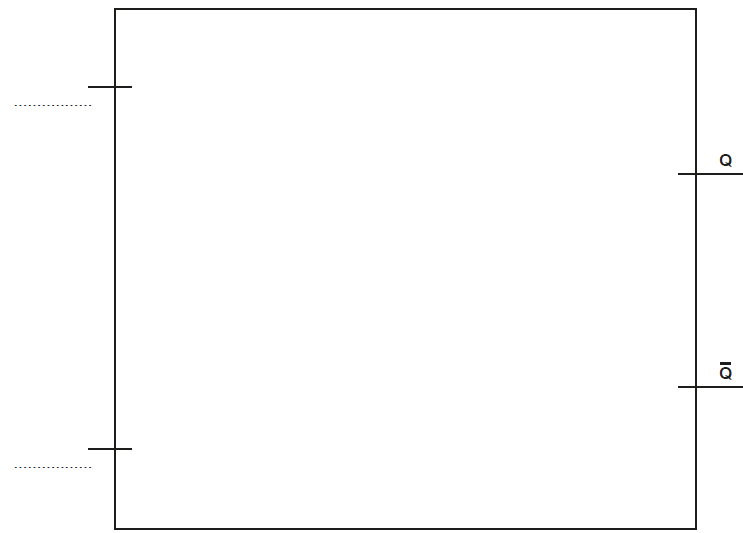
Answer Or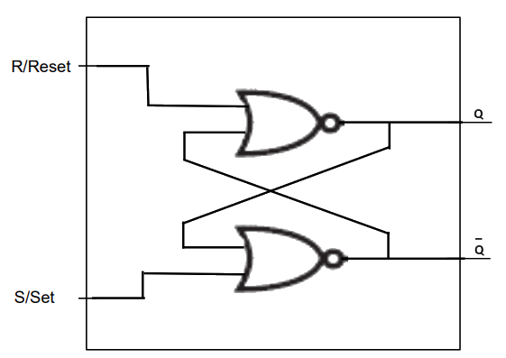
Boolean Algebra
Boolean algebra
What is Boolean algebra?
- Boolean algebra is a mathematical system used to manipulate Boolean values
- Complex expressions can be made simpler using the rules of Boolean algebra
- This is a more powerful simplification method than Karnaugh maps and can simplify expressions that Karnaugh maps cannot
- There are various different rules that you need to learn and that can then be applied to certain expressions to simplify them
- Combining these rules can mean that complex expressions can be reduced to much simpler ones
General rules
- General AND rules
- X AND 0 = 0
- X AND 1 = X
- X AND A = X
- NOT X AND X = 0
- Note, the value ox X is unknown and it is used as a placeholder
- Therefore X AND 1 = X means that the output will be whatever the value of X is
- General OR rules
- X OR 0 = X
- X OR 1 = 1
- X OR A = X
- NOT X OR X = 1
Boolean algebra notation
- In Boolean algebra, expressions are written using shorthand notation:
| Symbol | Meaning | Example | Explanation |
|---|---|---|---|
A · B or AB |
AND | A · B |
True only if both A and B are 1 |
A + B |
OR | A + B |
True if either A or B is 1 |
¬A or A' |
NOT / complement | ¬A |
True if A is 0, False if A is 1 |
( ) |
Brackets / grouping | (A + B)·C |
Do A OR B first, then AND with C |
A dot (·) for AND is often omitted, so AB means A AND B
- A line drawn above a variable or expression means that the value is inverted or negated
- It’s the NOT of that value
| Notation | Meaning | Explanation |
|---|---|---|
¬A or A' or A̅ |
NOT A | True if A is False, False if A is True |
A · B̅ |
A AND (NOT B) | B is negated before the AND operation |
(A + B)̅ |
NOT (A OR B) | The entire OR expression is negated (use De Morgan) |
(A · B · C)̅ |
NOT (A AND B AND C) | All values are ANDed together, then the result is negated |
-
When you see multiple horizontal lines, for example:
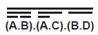
-
It means the whole expression is negated, not just one part
- Always apply De Morgan’s Law starting with the outermost line first
De Morgan’s Law
What is De Morgan’s Law?
- De Morgan’s Laws are used to simplify Boolean expressions involving negation of conjunctions (AND) or disjunctions (OR)
- They are particularly useful for rewriting logic circuits using only NAND or NOR gates
- There are two key rules:
- NOT (A AND B) is equivalent to (NOT A) OR (NOT B)
- NOT (A OR B) is equivalent to (NOT A) AND (NOT B)
Worked example 1: Simplify ¬(A ∧ B)
| Step | Explanation | Expression |
|---|---|---|
| Step 1 | Start with the original expression | |
| Step 2 | Apply De Morgan’s Law: change ∧ to ∨ and negate both terms | |
| Step 3 | Remove unnecessary brackets |
Worked example 2: Simplify ¬(A ∨ B)
| Step | Explanation | Expression |
|---|---|---|
| Step 1 | Start with the original expression | |
| Step 2 | Apply De Morgan’s Law: change ∨ to ∧ and negate both terms | |
| Step 3 | Remove unnecessary brackets |
Why use De Morgan’s Laws?
-
Simplifying Boolean expressions using De Morgan’s Laws:
- Allows for implementation using only NAND or NOR gates
- Makes circuit design more efficient and cost-effective
- Is essential in hardware where NAND/NOR logic is cheaper or faster to implement
- Is commonly used in microprocessor and memory device design (e.g. flash drives)
Simplify the following expression using Boolean algebra, including De Morgan’s laws. Show your working.[3]
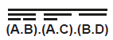
Answer
-
Correct application of De Morgan’s Law [1 mark]
- Correct application of Double Negation Law or Distributive Law [1 mark]
- Correct answer [1 mark]
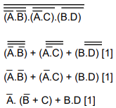
Karnaugh Maps
Karnaugh maps
What is a Karnaugh map?
- A Karnaugh map (KMap) is a tool that is used for simplifying Boolean algebra expressions
- It offers a visual method of grouping together expressions with common factors
- The format of the map makes it easy to identify and eliminate redundant terms
- They are used in digital logic design, such as simplifying the logic of digital circuits
Steps:
- Create the Map: Each cell in the grid corresponds to a term in the Boolean expression. Fill cells with 1s and 0s corresponding to the output of that term
- Grouping: Group the 1s in the grid. Each group must be a rectangle and the size of the group must be a power of 2. A cell can be part of multiple groups
- Simplifying: Write down a simplified Boolean expression for each group. The simplified expression for a group consists of the variables that remain constant in all terms in the group
- Final Expression: Combine the simplified expressions from each group using OR operations to get the final simplified Boolean expression
Creating Karnaugh Maps
- A Karnaugh Map (KMap) can be used to simplify a Boolean expression with 2 inputs
- Here is an example for the expression A V B (A OR B)
Step 1
- Add each variable starting with A at the top and B down the side
- Add each possible state for A and B
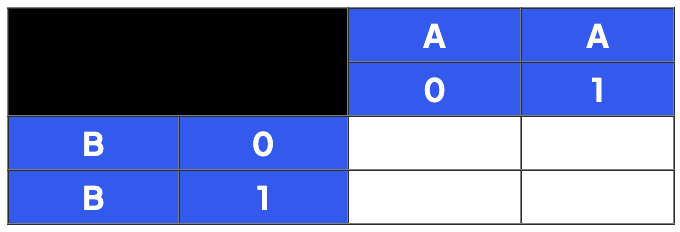
Step 2
- Take each expression in turn separated by the V (OR)
- First look at A on it’s own
- Find all cells where A is 1
- Add 1 to the cell
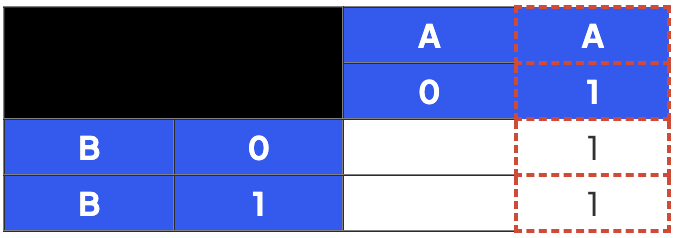
Step 3
- Repeat for B
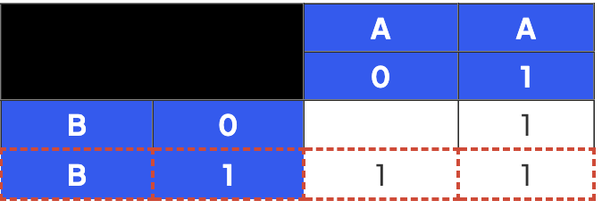
Step 4
- This is now a completed KMap for the expression A V B (A OR B)
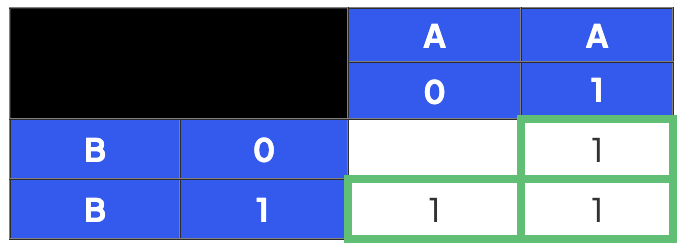
Simplifying expressions using Karnaugh Maps
- Simplify ¬A^¬B^C v ¬A^B^¬C v A^¬B^C v A^B using a KMap
- In this example there will be 3 variables A,B and C so the empty KMap will look like this:
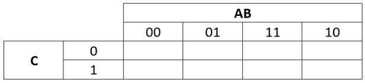
Step 1:
- Split this long term at each OR giving 4 smaller expressions (subterms) to add to the table:
- ¬A^¬B^C
- ¬A^B^¬C
- A^¬B^C
- A^B
Step 2:
- Take the first subterm ¬A^¬B^C
- Put a 1 in the map for every cell where this term would be TRUE (1)
- So if A and B were 0 and C was 1 this subterm would be 1
- So put a 1 in every cell in the KMap where A is 0, B is 0 and C is 1
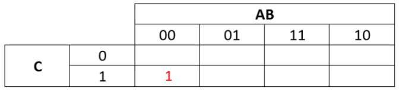
Step 3:
- The next subterm is ¬A^B^¬C
- Put a 1 in the KMap where A is 0, B is 1 and C is 0
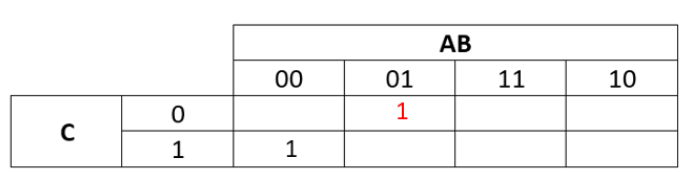
Step 4:
- The next subterm is A^¬B^C
- Put a 1 in the KMap where A is 1, B is 0 and C is 1
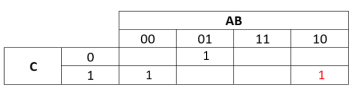
Step 5:
- The final subterm is A^B
- Put a 1 in the KMap where A is 1 and B is 1 (2 cells this time)
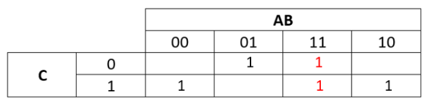
Making the groups
- Once you have written the 1s and 0s into your KMap, you can then use this to simply the expression
- In order to do this, you need to identify the groups
- This is the key to using the Karnaugh map to derive the simplified expression
- The aim of making the groups is to
- Make rectangular groups
- Make groups that are as large as possible
- Make groups that contain either 8,4,2 or 1 ones
- Groups can overlap (i.e. some ones can be in multiple groups)
- The Karnaugh map ‘grid’ wraps round in all directions so the groups can wrap round
Example grouping
Group 1:
-
So this would be one group
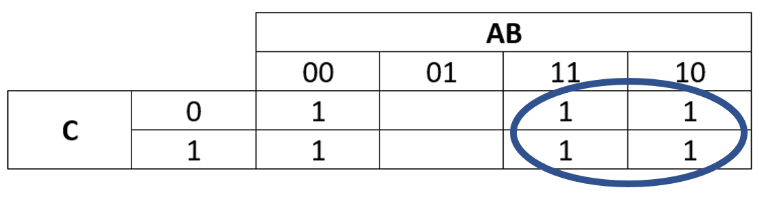
-
This group would represent A since within this group bothC and B change (have zeros and ones) whereas for A all the cells are one. Group 2:
-
This would be another group (note the wrapping around).
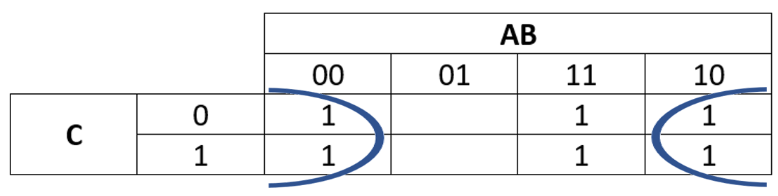
-
This group would represent ¬B since within this group both A and C change (have zeros and ones) whereas for B all the cells are zero Final simplified expression
-
To get the final simplified expression we OR the terms representing the two groups together.
- So the simplified expression is A v ¬B In questions where you have to use a Karnaugh Map always show the groups by drawing a box/circle round them.